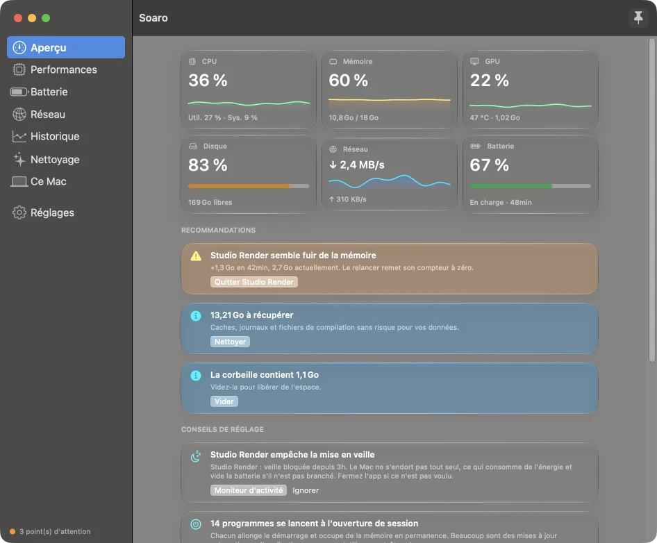
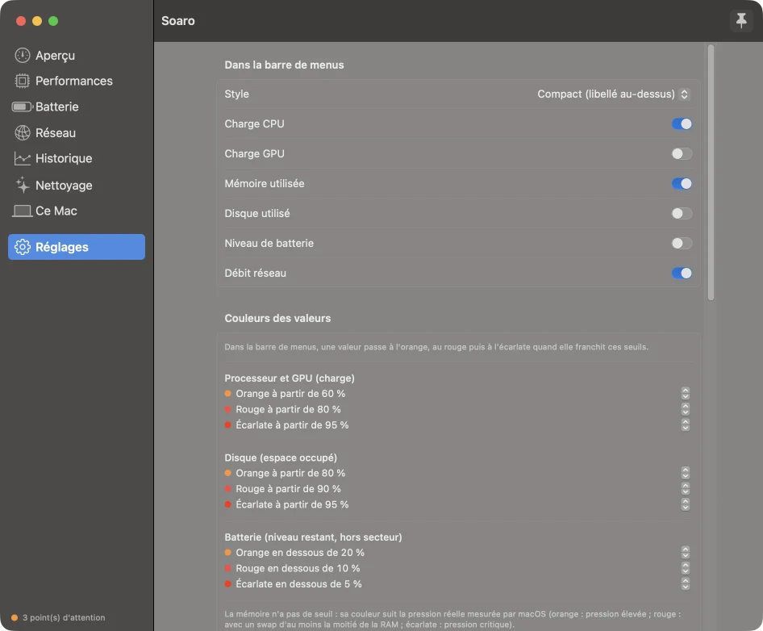
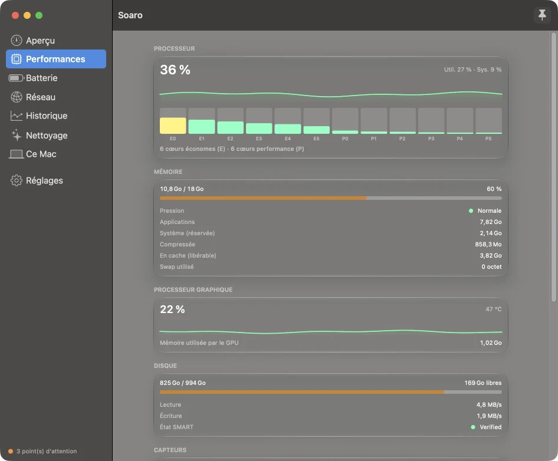
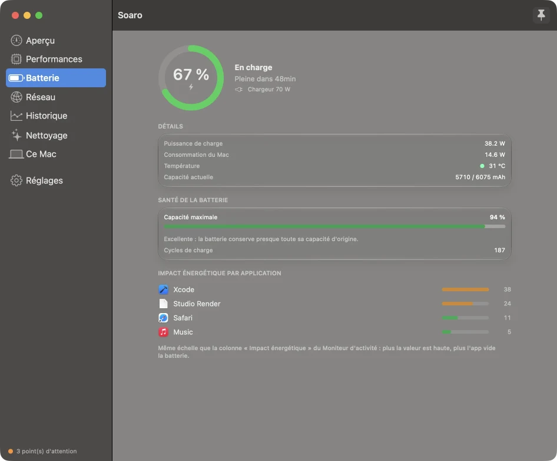
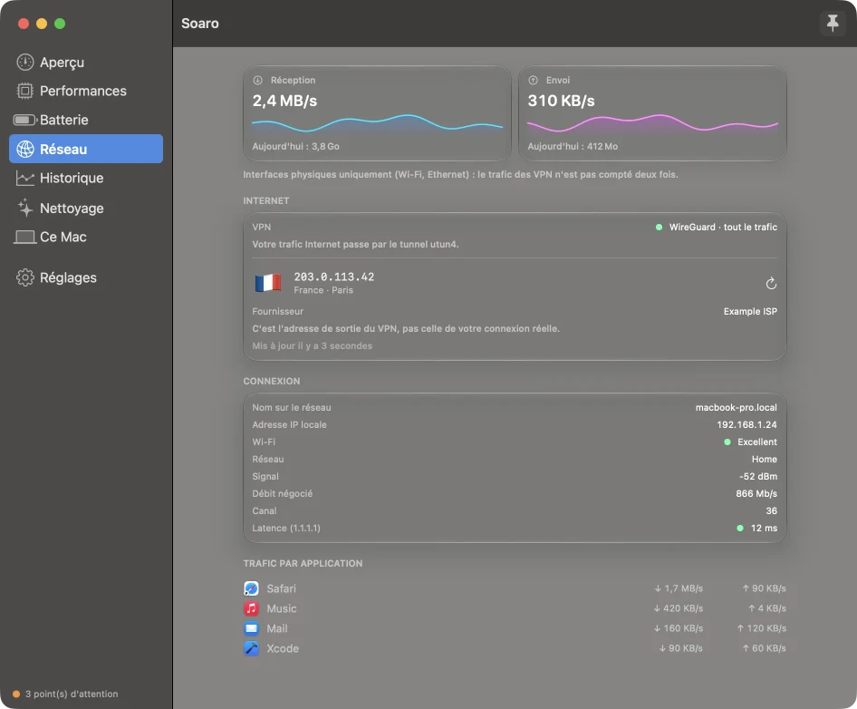
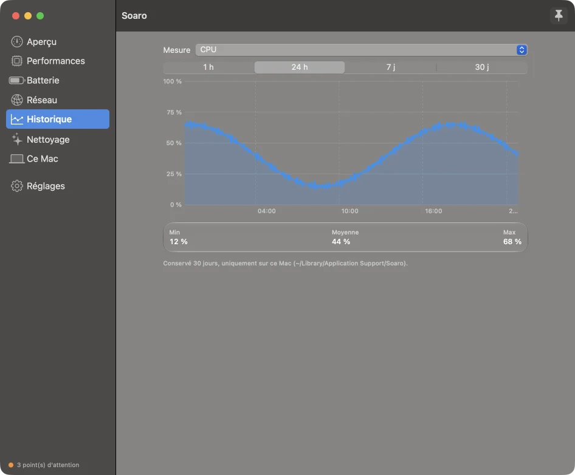
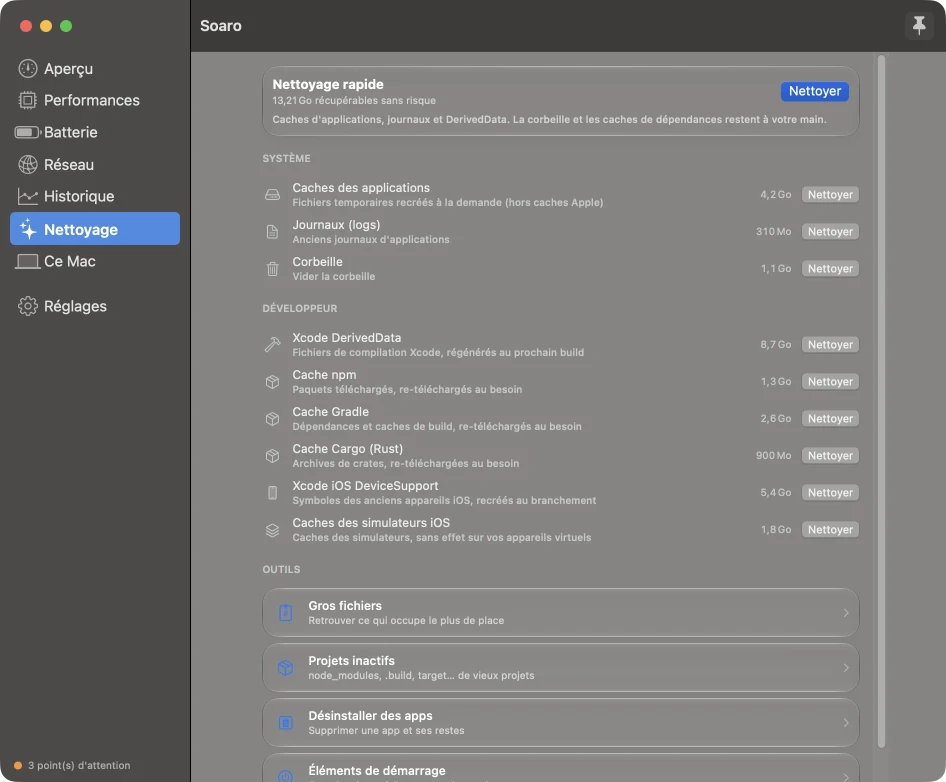
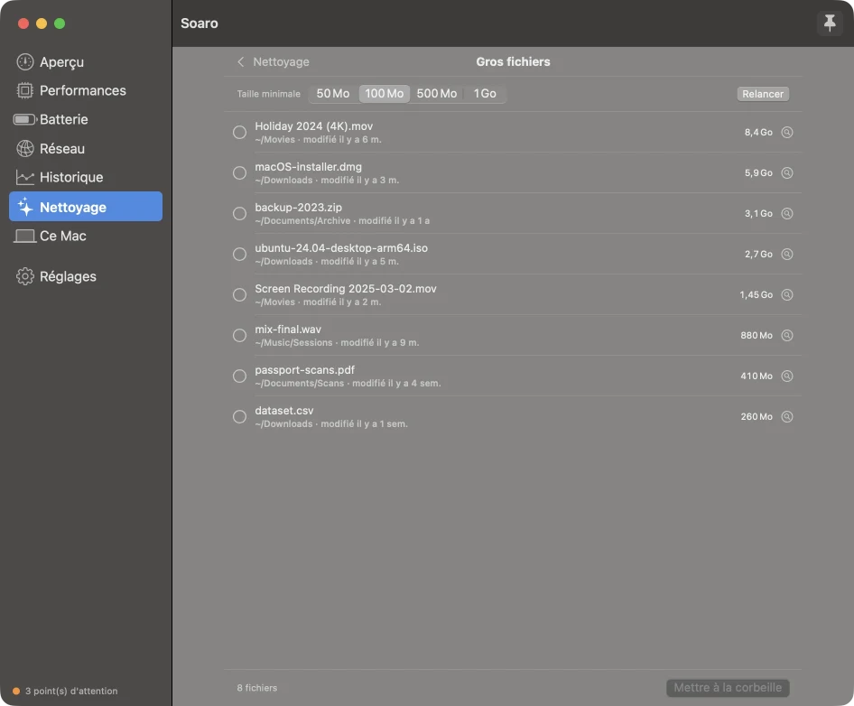
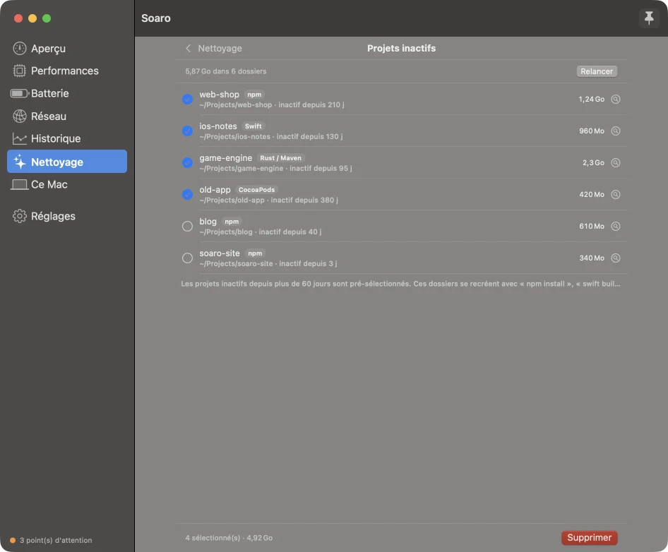
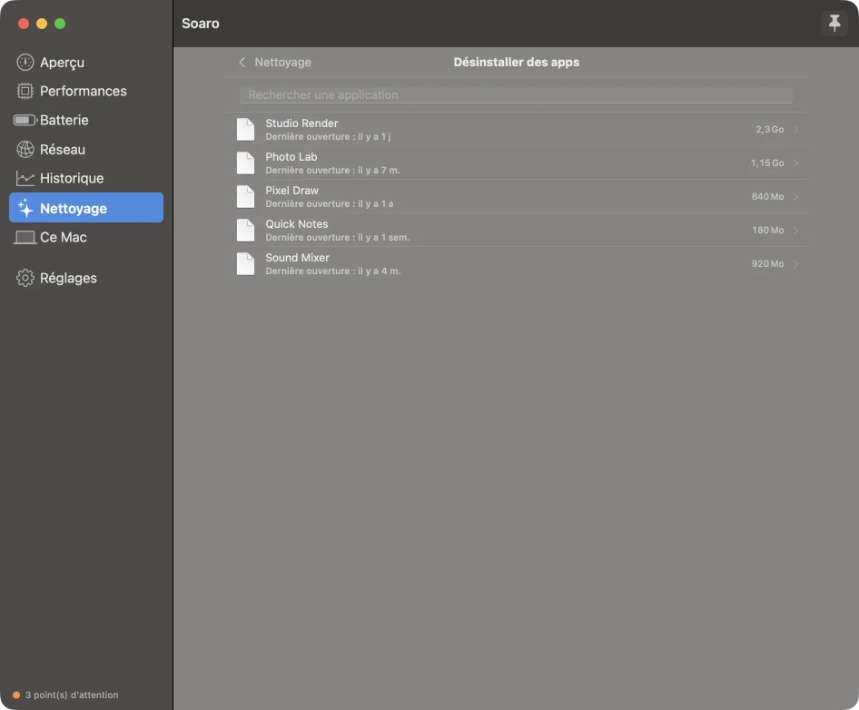

Dans la barre de menus
Choisissez ce que vous voulez voir, à côté de l'horloge.
- Une valeur passe à l'orange, au rouge, puis à l'écarlate quand elle se dégrade
- Vous choisissez les seuils
- Survolez l'icône pour voir pourquoi une valeur est colorée
Soaro vit dans la barre de menus. Elle surveille CPU, GPU, mémoire, disque, réseau et batterie, et vous dit quoi faire quand quelque chose ne va pas.

Ouvrez le panneau depuis la barre de menus pour un coup d'œil, ou gardez la fenêtre complète sur le bureau. Tout est mesuré sur votre Mac, en temps réel.
Choisissez ce que vous voulez voir, à côté de l'horloge.

Les détails que le Moniteur d'activité répartit sur plusieurs fenêtres.

Votre batterie est-elle encore en forme ? Quelle app la vide ?

Débit, volume, et qui utilise votre connexion.

Quelque chose a ramé cette nuit ? Regardez la dernière heure, le dernier jour, la dernière semaine ou le dernier mois. L'historique reste sur votre Mac, pendant 30 jours.

Quatre outils, pensés pour ceux qui fabriquent des choses.
node_modules, .build, target, Pods



Soaro prévient en cas de disque presque plein, de mémoire sous pression, de fuite mémoire probable, de Mac qui chauffe ou de batterie usée. Elle ne notifie que les problèmes critiques.
Soaro lit quelques réglages de macOS et vous dit ce qui pourrait aider : mode économie d'énergie, app qui bloque la veille, trop de programmes au démarrage, stockage, mises à jour, sauvegarde.
Soaro ne modifie jamais un réglage. Le bouton ouvre le bon panneau de Réglages Système, et vous décidez.
Environ 20-35 Mo de mémoire et 1-2 % d'un cœur au repos. Quand le panneau est fermé, l'interface ne coûte rien.
Soaro travaille sur votre Mac et garde vos données chez vous.
~/Library/Application Support/SoaroUne fois par jour, Soaro télécharge un petit fichier public pour savoir si une nouvelle version existe. Elle n'envoie aucune donnée personnelle. Vous pouvez désactiver cette vérification.
Ce site compte les visites avec Umami, un outil open source. Il ne dépose aucun cookie, ne vous suit pas d'un site à l'autre et respecte le réglage « Ne pas me suivre ». L'application, elle, n'envoie rien de tel.
build ou dist n'est jamais proposé.Je préfère être clair sur ce que Soaro ne sait pas faire.
Soaro est signée avec un Developer ID et notarisée par Apple. Elle se met à jour toute seule.
.dmg.Soaro est gratuite et open source. Si elle vous fait gagner du temps, vous pouvez la soutenir. C'est facultatif, et ça m'aide à continuer.
Offrez-moi un café